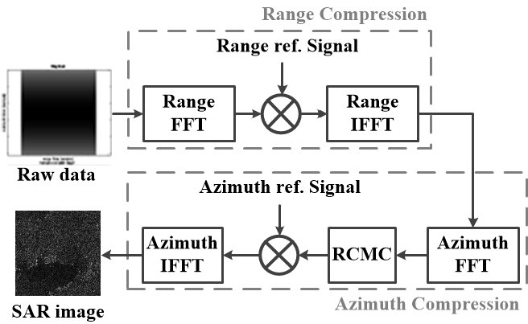

연구실적 · 국내전문학술지
실시간 SAR 영상 생성을 위한 Range Doppler 알고리즘의 FPGA 기반 가속화
FPGA-Based Acceleration of Range Doppler Algorithm for Real-Time Synthetic Aperture Radar Imaging

초록
In this paper, an FPGA-based acceleration scheme of range Doppler algorithm (RDA) is proposed for the real time synthetic aperture radar (SAR) imaging. Hardware architectures of matched filter based on systolic array architecture and a high speed sinc interpolator to compensate range cell migration (RCM) are presented. In addition, the proposed hardware was implemented and accelerated on Xilinx Alveo FPGA. Experimental results for 4096×4096-size SAR imaging showed that FPGA-based implementation achieves 2 times acceleration compared to GPU-based design. It was also confirmed the proposed design can be implemented with 60,247 CLB LUTs, 103,728 CLB registers, 20 block RAM tiles and 592 DPSs at the operating frequency of 312 MHz.
본 논문에서는 실시간 SAR (synthetic aperture radar) 영상 생성을 위한 RDA (range Doppler algorithm)의 FPGA 기반 가속화 기법을 제안한다. RDA의 연산 과정인 거리 및 방위 압축 연산을 가속하기 위한 시스토릭 어레이 구조 기반 정합 필터와 RCM (range cell migration)을 보상해 주기 위한 고속의 sinc 보간 연산기의 하드웨어 구조를 제시하고, Xilinx Alveo FPGA에 다채널 커널 형태로 구현하여 가속을 진행하였다. 제안된 구조의 하드웨어를 사용하여 4096×4096 크기의 영상 생성시간을 측정한 결과, Nvidia RTX3090 GPU를 사용하여 SAR 영상을 생성하는 시간보다 약 2배 가속이 가능함을 확인하였다. 또한, 제안된 가속 하드웨어는 60,247개의 CLB LUT, 103,728개의 CLB register, 20개의 block RAM tile과 592개의 DPS로 구현 가능하며, 최대 동작속도는 312 MHz임을 확인하였다.
사이트 원문 표기
Dongmin Jeong (정동민), Wookyung Lee (이우경), Yunho Jung (정윤호), “실시간 SAR 영상 생성을 위한 Range Doppler 알고리즘의 FPGA 기반 가속화”, 전기전자학회논문지, 제25권 4호, 2021년
BibTeX
@article{10.7471/IKEEE.2021.25.4.634, author = {JeongDongmin and LeeWookyung and JungYunho}, title = {FPGA-Based Acceleration of Range Doppler Algorithm for Real-Time Synthetic Aperture Radar Imaging}, journal = {Journal of IKEEE}, publisher = {한국전기전자학회}, volume = {25}, number = {4}, pages = {634-643} year = 2021, month = 12
}